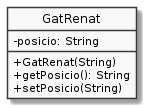

Enumerats¶
Fins ara hem fet servir literals de tipus String per definir els diferents valors d’algunes propietats. Per exemple, recordem el nostre amic el Gat Renat:

Recordem que els valors vàlids de posicio eren "dret", "assegut" i
"estirat". i que, per a assegurar que sempre eren vàlids, havíem de
controlar els valors en els diferents punts en que es podien canviar: al
constructor i al setter
1 2 3 4 5 6 7 8 9 10 11 12 13 14 15 | public class GatRenat {
private String posicio = "estirat";
public GatRenat(String posicio) {
setPosicio(posicio);
}
public void setPosicio(String posicio) {
if posicioValida(posicio) {
this.posicio = posicio;
}
}
public static boolean posicioValida(String posicio) {
return "dret".equals(posicio) || "assegut".equals(posicio) || "estirat".equals(posicio);
}
/* … */
}
|
D’aquesta manera, podem estar segurs que l’estat del gat Renat sempre
tindrà un valor correcte per posicio, fins i tot quan li assignem
un valor que no coneixem en temps de compilació:
1 | GatRenat renat = new GatRenat(Entrada.readLine());
|
Si bé aquest mecanisme funciona i ens garanteix que posicio només pot
tenir valors vàlids, no és gaire satisfactori. Un problema interessant és
que, en cas que li intentem assignar un valor no vàlid des de programa,
l’error només serà detectable en el moment de l’execució.
1 | renat.setEstat("drot"); // atenció a la 'o'!
|
No hi haurà algun mecanisme per enumerar tots els valors vàlids de
posicio?
enum¶
Com molts llenguatges de programació, Java ens ofereix la possibilitat de definir enumerats: tipus de dades que tenen limitats els valors possibles a una llista.
En el cas de Java, aquesta funcionalitat l’ofereixen els enum.
Una bona font de consulta és el tutorial de enumerats «oficial».
Si mirem aquesta documentació/tutorial, veurem que ens ofereix la següent definició:
1 2 3 | public enum DiaSetmana {
DILLUNS, DIMARTS, DIMECRES, DIJOUS, DIVENDRES, DISSABTE, DIUMENGE
}
|
Un cop definit DiaSetmana, podem tenir variables d’aquest tipus,
assignar-li valors, etc:
1 2 3 4 5 | DiaSetmana dia = DiaSetmana.DILLUNS;
if (dia.equals(DiaSetmana.DIVENDRES)) {
System.out.println("Aquesta nit, festa de teulades!");
}
|
enum és una classe¶
Els enumerats en Java són en realitat un tipus especial de classe que indica les instàncies possibles.
Com una classe qualsevol, té la possibilitat de definir els seus propis atributs i mètodes.
Per exemple, considera el següent codi:
1 2 3 4 5 6 7 8 9 10 11 12 13 14 15 16 17 18 19 20 21 22 23 24 25 26 27 28 29 30 31 32 33 34 35 36 37 38 39 40 41 42 43 44 45 46 47 48 49 50 51 52 53 54 55 56 57 58 59 60 61 62 63 64 65 66 67 68 69 70 | public class UsaDiaSetmana {
public static void main(String[] args){
for (DiaSetmana dia: DiaSetmana.values()) {
System.out.printf("El %s està en la posició %d%n", dia, dia.getCodi());
}
// obtenim un dia des del seu codi
int diaSonInt = 1;
DiaSetmana diaSon = DiaSetmana.fromCodi(diaSonInt);
System.out.printf("Els %s tenim molta són%n", diaSon);
/// obtenim un dia des del seu nom
String diaFestaStr = "divendres";
DiaSetmana diaFesta = DiaSetmana.fromString(diaFestaStr);
System.out.printf("Els %s fem festa a la teulada%n", diaFesta);
// veiem què passa si demanem un nom que no existeix
try {
DiaSetmana.fromString("un dia qualsevol");
} catch (IllegalArgumentException e) {
System.out.println("Capturada la següent excepció:");
e.printStackTrace();
}
// una manera similar d'aconseguir el mateix que abans
try {
DiaSetmana.valueOf("un dia qualsevol");
} catch (IllegalArgumentException e) {
System.out.println("Capturada la següent excepció:");
e.printStackTrace();
}
}
}
interface Codificat {
public int getCodi();
}
enum DiaSetmana implements Codificat {
DILLUNS (1),
DIMARTS (2),
DIMECRES (3),
DIJOUS (4),
DIVENDRES (5),
DISSABTE (6),
DIUMENGE (7);
private int codi;
private DiaSetmana(int codi) { this.codi = codi; }
public int getCodi() { return codi; }
@Override
public String toString() { return super.toString().toLowerCase(); }
public static DiaSetmana fromCodi(int codi) {
for (DiaSetmana dia: DiaSetmana.values()) {
if (dia.getCodi() == codi) return dia;
}
throw new IllegalArgumentException(String.format("Codi %d no suportat per DiaSetmana", codi));
}
public static DiaSetmana fromString(String nom) {
for (DiaSetmana dia: DiaSetmana.values()) {
if (dia.name().equalsIgnoreCase(nom)) return dia;
}
throw new IllegalArgumentException(String.format("Nom \"%s\" no suportat per DiaSetmana", nom));
}
}
|
En executar-lo, obtindrem:
$ java UsaDiaSetmana
El dilluns està en la posició 1
El dimarts està en la posició 2
El dimecres està en la posició 3
El dijous està en la posició 4
El divendres està en la posició 5
El dissabte està en la posició 6
El diumenge està en la posició 7
Els dilluns tenim molta són
Els divendres fem festa a la teulada
Capturada la següent excepció:
java.lang.IllegalArgumentException: Nom "un dia qualsevol" no suportat per DiaSetmana
at DiaSetmana.fromString(UsaDiaSetmana.java:68)
at UsaDiaSetmana.main(UsaDiaSetmana.java:19)
Capturada la següent excepció:
java.lang.IllegalArgumentException: No enum constant DiaSetmana.un dia qualsevol
at java.base/java.lang.Enum.valueOf(Enum.java:240)
at DiaSetmana.valueOf(UsaDiaSetmana.java:39)
at UsaDiaSetmana.main(UsaDiaSetmana.java:27)
Pot ser interessant que mirem què ens ha generat javac:
$ ls
Codificat.class DiaSetmana.class UsaDiaSetmana.class UsaDiaSetmana.java
$ javap DiaSetmana.class
Compiled from "UsaDiaSetmana.java"
final class DiaSetmana extends java.lang.Enum<DiaSetmana> implements Codificat {
public static final DiaSetmana DILLUNS;
public static final DiaSetmana DIMARTS;
public static final DiaSetmana DIMECRES;
public static final DiaSetmana DIJOUS;
public static final DiaSetmana DIVENDRES;
public static final DiaSetmana DISSABTE;
public static final DiaSetmana DIUMENGE;
public static DiaSetmana[] values();
public static DiaSetmana valueOf(java.lang.String);
public int getCodi();
public java.lang.String toString();
public static DiaSetmana fromCodi(int);
public static DiaSetmana fromString(java.lang.String);
static {};
}
T’has fixa’t? Al final, Java ha traduït enum a una classe més o menys normaleta?
Permet-me que et remarqui uns punts:
ofereix una propietat estàtica i final per cada valor possible de l’enumerat
ofereix un array que conté cadascun dels valors
la classe està declarada amb el mateix nom que l’enumerat, i marcada com a
final. Aquest modificador, quan està associat a una classe, fa que aquesta no pugui ser estesa (no podrà tenir subclasses)
Amb una llista de propietats estàtiques i finals per cada valor possible. Amb un array que conté tots aquests valors i